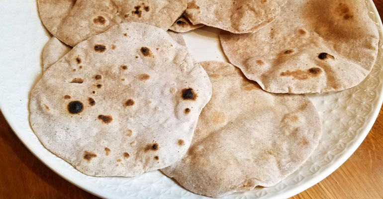

Historique
Nairobi, capitale vibrante du Kenya, est une ville imprégnée d'histoire et de diversité culturelle. Fondée au 19ème siècle en tant que campement pour la construction du chemin de fer ougando-mombassien, Nairobi est rapidement devenue un centre économique et politique majeur de la région. Son nom dérive probablement de l'expression masaï "Enkare Nairobi" signifiant "eau fraîche", en référence à la rivière Nairobi qui traverse la ville. Aujourd'hui, Nairobi est un melting-pot de cultures africaines, européennes, asiatiques et arabes, ce qui se reflète dans sa cuisine variée, ses festivals colorés et ses quartiers animés. Ses musées, tels que le Musée national du Kenya, racontent l'histoire riche et complexe du pays, tandis que ses parcs naturels offrent des opportunités uniques d'observer la faune africaine dans son habitat naturel. Avec son dynamisme urbain et sa connexion profonde à la nature environnante, Nairobi est une ville fascinante où l'histoire et la culture se mêlent pour créer une expérience unique.
Places emblématiques
Le Parc national de Nairobi
Le Parc national de Nairobi, situé aux portes de la capitale kenyane, est une réserve naturelle d'une richesse exceptionnelle. Offrant une immersion totale dans la faune africaine, ce parc emblématique abrite une incroyable diversité d'espèces, dont des lions, des léopards, des rhinocéros, des girafes et bien d'autres. Les vastes plaines herbeuses, les zones boisées et les points d'eau offrent un habitat idéal pour observer ces animaux dans leur environnement naturel. Les visiteurs peuvent profiter de safaris photographiques palpitants tout en admirant les vues imprenables sur la ville en arrière-plan. Avec son ambiance sauvage et préservée, le Parc national de Nairobi est une destination incontournable pour les amoureux de la nature et les passionnés de safari, offrant une expérience inoubliable au cœur de la nature africaine.
Le Giraffe Centre
Le Giraffe Centre, situé à Nairobi, est un sanctuaire de conservation dédié à la protection des girafes Rothschild, une espèce en danger. Les visiteurs ont l'opportunité unique d'approcher ces majestueuses créatures de près, de les nourrir depuis une plateforme surélevée et d'en apprendre davantage sur leurs comportements et leur habitat. Niché dans un domaine verdoyant, le Giraffe Centre offre également des vues imprenables sur les paysages environnants, créant une atmosphère paisible et immersive. En plus de l'observation des girafes, les visiteurs peuvent participer à des programmes éducatifs sur la conservation de la faune et la préservation de l'environnement. La visite du Giraffe Centre est une expérience enrichissante qui sensibilise les visiteurs à l'importance de protéger ces animaux emblématiques et leur habitat naturel. En soutenant cette initiative de conservation, les visiteurs contribuent à assurer un avenir durable pour les girafes et d'autres espèces sauvages au Kenya.
La Kazuri Beads Factory
La Kazuri Beads Factory, située à Nairobi, est une coopérative artisanale renommée, célèbre pour ses magnifiques perles en céramique faites à la main. Fondée dans les années 1970 pour fournir un emploi aux femmes défavorisées, cette fabrique offre un aperçu fascinant du processus de création artisanale. Les visiteurs peuvent visiter l'atelier pour voir les artisans au travail, créer leurs propres bijoux personnalisés et acheter des souvenirs uniques. Chaque perle est soigneusement façonnée à la main, ce qui donne à chaque pièce une beauté et une individualité uniques. En plus de soutenir une cause louable, les visiteurs peuvent repartir avec des pièces artisanales qui capturent l'essence de la culture kenyane. La Kazuri Beads Factory est une étape incontournable pour les amateurs d'artisanat et ceux qui souhaitent soutenir le développement communautaire au Kenya.
Le Karen Blixen Museum
Le Karen Blixen Museum, situé à Nairobi, est une demeure historique qui offre un fascinant aperçu de la vie de l'écrivaine danoise Karen Blixen, célèbre pour son livre "Out of Africa". Ancienne résidence de l'auteur, la maison présente des meubles d'époque, des photographies et des souvenirs personnels qui transportent les visiteurs dans l'atmosphère romantique de l'époque coloniale au Kenya. Niché dans un magnifique jardin, le musée offre également des vues pittoresques sur les environs, créant une ambiance nostalgique et inspirante. Les visiteurs peuvent explorer les différentes pièces de la maison pour découvrir la vie quotidienne de Karen Blixen et son influence sur la littérature et la culture kényanes. Le Karen Blixen Museum est un lieu incontournable pour les amateurs de littérature et d'histoire, offrant une immersion captivante dans le passé colonial du Kenya.
Plats locaux
L'ugali
L'ugali, un plat traditionnel kényan, est un aliment de base omniprésent dans la cuisine du pays. Préparé à partir de farine de maïs et d'eau, il est cuit jusqu'à obtenir une consistance dense et épaisse. Ce plat simple mais nourrissant est souvent servi avec une sauce ou un accompagnement, comme le sukuma wiki (légumes verts sautés) ou le nyama choma (viande grillée). L'ugali est apprécié pour sa polyvalence et sa capacité à satisfaire la faim. Il est également un symbole de convivialité et de partage, souvent partagé lors de repas en famille ou entre amis. En tant que pilier de la cuisine kényane, l'ugali incarne l'essence même de la culture et de l'identité culinaires du Kenya.
.JPG)
Le chapati
Le chapati, un pain plat d'origine indienne, est devenu un aliment de base incontournable au Kenya et dans de nombreuses régions d'Afrique de l'Est. Préparé à partir de farine de blé, d'eau, de sel et parfois d'huile, le chapati est une création simple mais délicieuse qui accompagne de nombreux plats kényans. Sa texture moelleuse et légère, combinée à son goût subtil, en fait un accompagnement parfait pour le nyama choma (viande grillée), le sukuma wiki (légumes sautés) ou même les plats en sauce. Souvent préparé à la maison ou vendu dans les marchés et les rues, le chapati est apprécié pour sa polyvalence et son accessibilité. Que ce soit en tant que repas principal, en-cas ou accompagnement, le chapati est un aliment réconfortant qui réunit les familles et les communautés autour de la table.

Nyama Choma
Nyama Choma,un plat emblématique de la cuisine kényane, est une délicieuse grillade de viande généralement accompagnée d'ugali, un plat de maïs, et d'une sauce piquante. Cette spécialité culinaire est une tradition sociale importante au Kenya, souvent partagée entre amis et en famille lors de rassemblements festifs. La viande, généralement du bœuf, du mouton ou du poulet, est marinée dans un mélange d'épices avant d'être grillée lentement sur des braises pour une saveur charnue et délicieuse. Le Nyama Choma est servi dans des restaurants, des bars et des stands de rue à travers tout le pays, offrant aux amateurs de viande une expérience culinaire authentique et mémorable. Avec sa simplicité rustique et sa convivialité, ce plat incarne l'esprit chaleureux et accueillant de la culture kényane, faisant du Nyama Choma une expérience culinaire incontournable pour ceux qui visitent le Kenya.